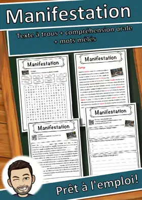
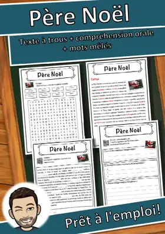
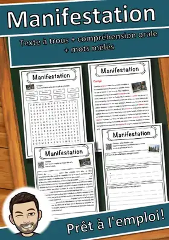
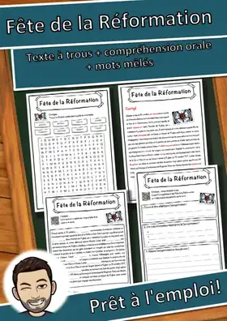
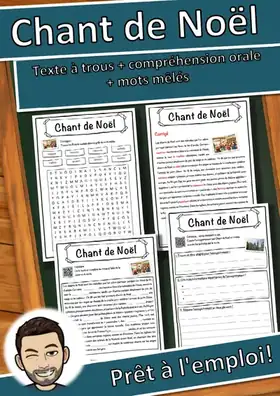
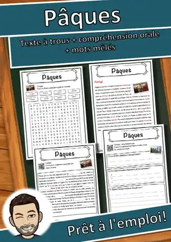
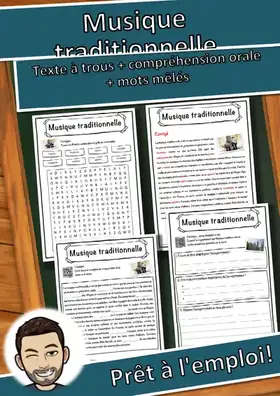
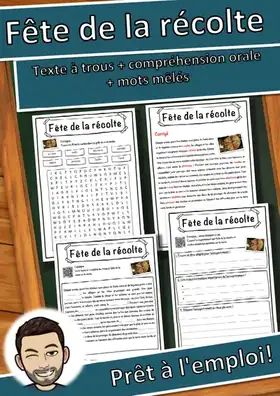

Le Père Noël secret en classe: Texte, règles, tirage au sort et fiche, CE1–CM1
Tout pour le Père Noël secret en classe : un court texte avec des questions, une affiche des règles, des papiers pour le tirage au sort, une fiche pour le Père Noël secret et une carte de remerciement. Ainsi, chaque enfant sait ce que l'autre aime – et personne n'est oublié. Utilisation en c
ThèmeFêtes et traditions
NiveauxCE1, CE2, CM1
Type de ressourceFiche de lecture
FormatPDF
Ressources similaires

Manifestation – Fiche CM1-CM2 : texte à trous, compréhension orale et mots mêlés

Père Noël – Fiche : texte à trous, compréhension orale et mots mêlés

Manifestation – Fiche : texte à trous, compréhension orale et mots mêlés

Fête de la Réformation – Fiche : texte à trous, compréhension orale et mots mêlés

Chant de Noël – Fiche : texte à trous, compréhension orale et mots mêlés

Pâques – Fiche : texte à trous, compréhension orale et mots mêlés

Musique traditionnelle – Fiche : texte à trous, compréhension orale et mots mêlés
